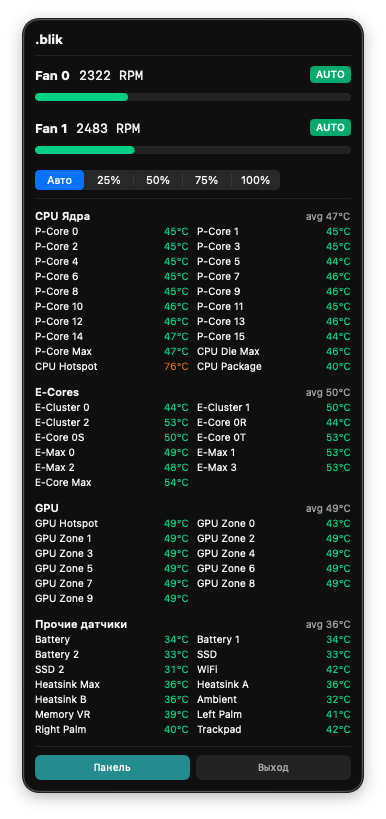
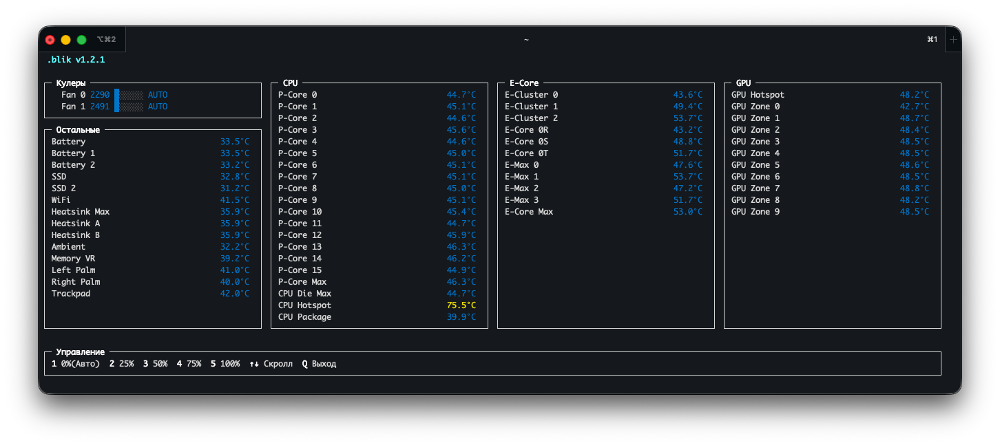
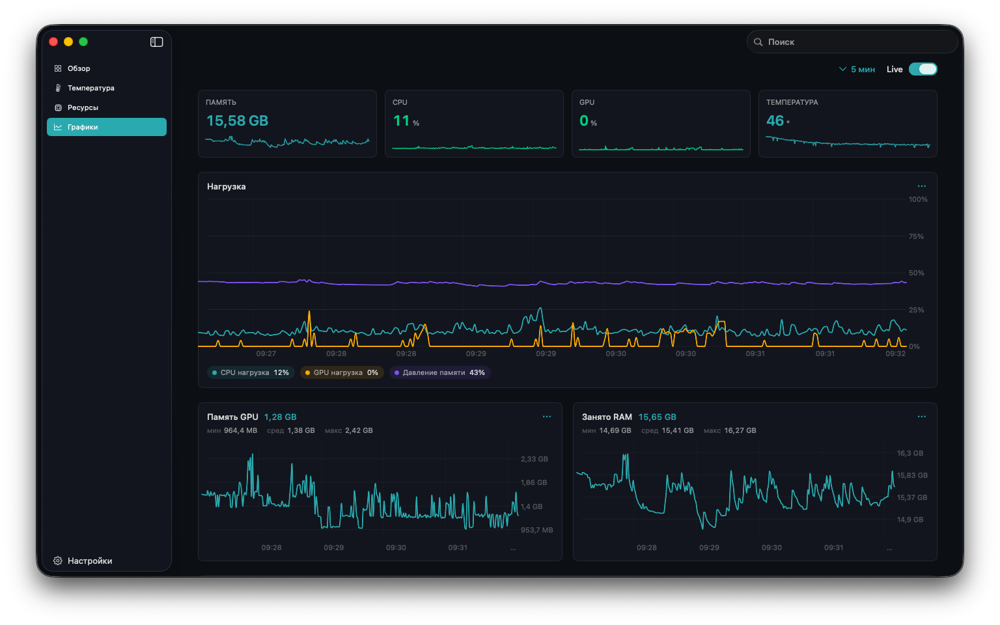

01 · обзор
всё главное — одним экраном
Температуры и загрузка CPU, GPU, RAM, VRAM и диска собраны в компактную сетку KPI. Открыл — и сразу видно состояние машины.

Температуры, загрузка CPU и GPU, память, диск и обороты кулеров — в реальном времени, с локальной историей метрик.
Температуры и загрузка CPU, GPU, RAM, VRAM и диска собраны в компактную сетку KPI. Открыл — и сразу видно состояние машины.
CPU и E-Core, GPU, SSD, батарея и десятки сенсоров читаются напрямую через SMC. Цветовая индикация — зелёный, жёлтый, красный.

Загрузка P- и E-ядер, GPU и VRAM, память (wired, сжатая, кэш файлов, нагрузка) и скорость чтения-записи диска.

Локальные графики метрик до 7 дней — live-режим и любой прошедший период. Данные не покидают устройство.

Приложение в строке меню, дашборд и CLI-утилита в PATH. Привилегированный XPC-демон делает root-операции — без sudo.



Скачайте .pkg из последнего релиза — установка через визард, дальше всё работает само.